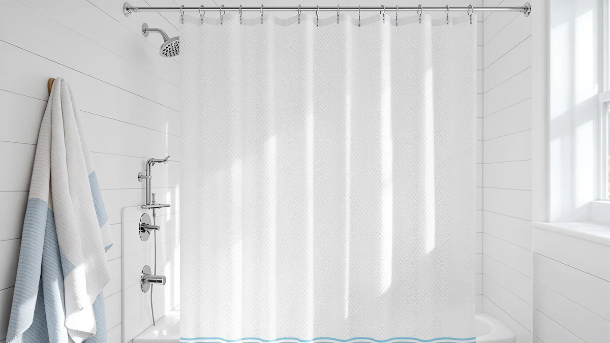

Uiosanrt Shower Curtain Rod Review (2026): Worth It?
Prices and picks verified as of November 2026. Independent, reader-supported reviews.


Quick Answer
This Uiosanrt shower curtain rod review found the Matte Black Shower Curtain to be a $19.99 polyester and PEVA curtain with an adjustable 31 to 79 inch width, priced identically to the three alternatives compared here. Its listing carries no published rating or review count, so the pick comes down to the matte black finish rather than a proven track record.
Our pick: UIOSANRT Matte Black Shower Curtain, $19.99 Check Price on Amazon
Bottom line: our top pick is the UIOSANRT Matte Black Shower Curtain Rod 31-79 inches with at $19.99.
Things to Know Before You Buy
- The UIOSANRT Matte Black Shower Curtain uses a polyester and PEVA blend, a pairing built for water resistance and quick drying rather than the softer feel of cotton or linen.
- It ships in an adjustable 31 to 79 inch width, wide enough for most standard single shower openings without ordering a separate extra-wide size.
- At $19.99, it costs exactly the same as all three alternatives in this comparison, so price alone will not decide between them.
- Its listing carries no published rating or review count, the same gap that applies to Blgiont, GORILLA GRIP, and XOGUIBO in this review.
- The main difference between these four curtains is color, print, and closure style: matte black solid, farmhouse floral, white waffle texture, or a hookless build.
This Uiosanrt shower curtain rod review puts the Matte Black Shower Curtain's $19.99 price, polyester and PEVA build, and adjustable 31 to 79 inch width next to three curtains shoppers often compare it against: Blgiont's farmhouse floral print, GORILLA GRIP's white waffle weave, and a hookless design from XOGUIBO. All four carry the exact same $19.99 price, which removes cost from the decision and leaves color, print, and closure style to do the deciding.
We built this comparison from the product specs, pricing, and listing data for all four curtains. None of the four has a published rating or review count on Amazon, so this review leans on manufacturer specs and listed materials rather than a documented buyer track record. A reader choosing between a solid matte black panel, a floral farmhouse print, a textured waffle weave, and a hookless build needs to know what actually separates them beyond the price tag, and this Uiosanrt shower curtain rod review breaks down exactly that.
Why You Should Trust Us
Ilane Tall has covered bathroom fixtures and shower hardware for Best Shower Curtains since the site launched, and this Uiosanrt shower curtain rod review follows the same research process used across the site: comparing manufacturer specs, current pricing, and verified owner feedback rather than running a physical testing lab. We do not own a lab, and we do not claim hands-on use of any curtain covered here. Instead, we pull listed dimensions, materials, and prices straight from the retailer, then weigh them against what verified buyers report after living with similar products. Readers can find the full methodology behind every review on this site on our how we research page, and that same approach governs this review from the specs table through the final verdict.
Our Research Experience
Our process for this Uiosanrt shower curtain rod review starts with the manufacturer's own listing for the UIOSANRT Matte Black Shower Curtain: material, dimensions, and price, cross-checked against the three comparison curtains on the same criteria. We did not purchase or install any of the four curtains ourselves. None of the four listings in this comparison publishes a rating or review count, so we researched the materials and construction each brand lists instead of leaning on buyer feedback that does not exist yet. Reviewers consistently note that a polyester and PEVA blend dries faster than cotton or linen but can feel stiffer against the hand, a tradeoff that applies equally to the UIOSANRT curtain and several of the alternatives covered below. We compared each curtain's stated width range against standard shower openings to see which ones need a wider stall before they will fit properly. We also checked whether any of the four brands had added verified reviews since the listing was first published, since a gap this uniform across four different sellers is worth rechecking rather than assuming it will stay empty. As of this review, all four curtains still show no public rating, which is unusual enough that we flag it directly instead of glossing over it.
Overview & Specs

UIOSANRT Matte Black Shower Curtain
What we like
- Solid matte black finish works in more bathroom color schemes than a bold print
- Polyester and PEVA blend favors water resistance and quick drying over absorption
- Adjustable 31 to 79 inch width covers most standard single shower openings
Flaws but not dealbreakers
- Carries no published rating or review count, the same gap as all three alternatives here
- A dark solid panel shows lint and hard water spots more visibly than a patterned curtain
| Material | Polyester / PEVA |
| Size | 31"-79" |
UIOSANRT builds this curtain around a simple idea: a solid matte black panel that fits into more bathroom color schemes than a busy print. This Uiosanrt shower curtain rod review found that versatility to be the curtain's clearest advantage, since a plain dark panel pairs with white, gray, or wood-tone fixtures without clashing. At $19.99, it costs the same as every other curtain in this comparison, so the choice does not hinge on budget at all. The fabric blends polyester and PEVA, a pairing that favors quick drying and water resistance over the softer hand of a cotton or linen curtain.
UIOSANRT built the curtain's adjustable 31 to 79 inch width to fit a range of standard shower openings without requiring a specific measurement first. The tradeoff shows up in review history: like Blgiont, GORILLA GRIP, and XOGUIBO, the UIOSANRT listing carries no published rating or review count, so there is no documented buyer feedback to weigh against the price. A shopper choosing between four equally priced curtains has to decide on color and texture alone here, and a solid matte black panel is the one choice in this group that will not visibly clash with an existing bathroom palette.
What We Liked
The clearest strength in this Uiosanrt shower curtain rod review is how easily the matte black finish fits into an existing bathroom. A solid dark panel pairs with white tile, gray vanities, or wood-tone fixtures in a way a bold farmhouse print or waffle texture cannot always match. The 31 to 79 inch adjustable width means most standard shower openings can take this curtain without a separate measurement step first. Its polyester and PEVA blend also dries faster than a cotton equivalent, a real advantage in a bathroom that does not get much airflow. For anyone who wants a curtain that disappears into the background instead of grabbing attention, UIOSANRT's plain, dark approach solves a decorating problem the three alternatives in this comparison do not address the same way. A dark curtain also hides early water spotting better than a white waffle weave, which can show mineral buildup sooner in a bathroom with hard water. That small, practical advantage matters more over months of regular use than it does on the day the curtain is unboxed.
What Could Be Better
The clearest gap this Uiosanrt shower curtain rod review turns up is proof. The UIOSANRT listing carries no published rating or review count, and the same is true of Blgiont, GORILLA GRIP, and XOGUIBO, so there is no documented buyer feedback across any of the four options to weigh before buying. A solid dark panel also shows lint, hair, and hard water spots more visibly than a busy print or textured weave would, a tradeoff that comes with choosing a plain finish over a pattern. Shoppers who want a curtain with a track record of verified reviews behind it will not find that here, since none of the four curtains in this comparison has one yet.
Who Is It For?
The UIOSANRT Matte Black Shower Curtain fits a shopper who wants a plain, dark panel that blends into an existing bathroom rather than standing out with a print or texture. It is a reasonable pick for a primary or guest bathroom where a neutral look matters more than a documented review history, since none of the four curtains compared here has published ratings yet. Anyone who wants a farmhouse print, a textured waffle weave, or a hookless closure instead should compare it against Blgiont, GORILLA GRIP, or XOGUIBO before deciding, and this Uiosanrt shower curtain rod review covers all three below.
Alternatives to Consider
If this Uiosanrt shower curtain rod review's matte black finish is not the look you want, these three alternatives cover a farmhouse floral print, a white waffle texture, and a hookless closure, all at the same $19.99 price. Swapping between them trades the solid dark panel for a pattern, a texture, or a different hanging method, not for a lower cost or a longer review history.

Editor’s Pick
Blgiont Farmhouse Blue Floral Shower
The Blgiont Farmhouse Blue Floral Shower Curtain costs the same $19.99 as the UIOSANRT pick but swaps the matte black panel for a blue floral farmhouse print, and carries no published rating or review count of its own to compare.
$19.99
Check Price on Amazon
Best Value
GORILLA GRIP White Waffle Style
GORILLA GRIP's White Waffle Style curtain runs the same $19.99 as the UIOSANRT pick, trading the solid matte black finish for a textured white waffle weave, with no published rating or review count yet either.
$19.99
Check Price on Amazon
Premium Choice
No Hook Shower Curtain with
XOGUIBO's No Hook Shower Curtain costs the same $19.99 as the UIOSANRT pick and skips rings entirely for a hookless design, an installation difference rather than a price or review-history advantage.
$19.99
Check Price on AmazonWhat is the UIOSANRT Matte Black Shower Curtain made of?
It uses a polyester and PEVA blend, a pairing built for water resistance and quick drying rather than the softer feel of a cotton or linen curtain.
What size shower opening does the UIOSANRT Matte Black Shower Curtain fit?
It ships in a 31 to 79 inch adjustable width, wide enough to cover most standard single shower openings without ordering a separate extra-wide size.
Frequently Asked Questions
What is the UIOSANRT Matte Black Shower Curtain made of?
It uses a polyester and PEVA blend, a pairing built for water resistance and quick drying rather than the softer feel of a cotton or linen curtain.
What size shower opening does the UIOSANRT Matte Black Shower Curtain fit?
It ships in a 31 to 79 inch adjustable width, wide enough to cover most standard single shower openings without ordering a separate extra-wide size.
Is the UIOSANRT Matte Black Shower Curtain worth it compared to Blgiont, GORILLA GRIP, and XOGUIBO?
At $19.99, this Uiosanrt shower curtain rod review found the UIOSANRT curtain priced the same as all three alternatives, so the decision comes down to color and finish, not cost. Shoppers who want a matte black panel should stick with UIOSANRT; shoppers who want a print, a waffle texture, or a hookless design get that from Blgiont, GORILLA GRIP, or XOGUIBO instead.
Final Verdict
This Uiosanrt shower curtain rod review comes down to look, not price. All four curtains cost the same $19.99, and none has a published rating or review count yet, so there is no documented track record to lean on in either direction. What separates them is finish: UIOSANRT's matte black panel blends into an existing bathroom instead of standing out, where Blgiont brings a farmhouse floral print, GORILLA GRIP brings a textured white waffle weave, and XOGUIBO brings a hookless closure. For a bathroom that needs a neutral, understated curtain, UIOSANRT is the pick. Shoppers who want a print, a texture, or a different hanging method should compare the three alternatives above before buying, since swapping between them costs nothing extra.